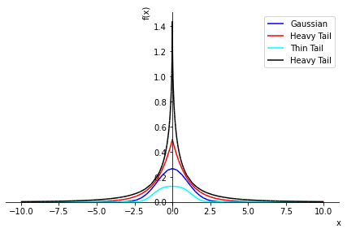

devblog
About
devblog
Cpp Common Knowledge
My notes for cpp
Mar 11, 2024
Uncertain Data types - Sampling based Bayes-Laplace Rule
Python class for uncertain datatype
Jan 9, 2024
Deebul Nair
Representation and propagation of uncertainty
Uncertainty representation in Robotics
Aug 25, 2023
Deebul Nair
Non-Linear System Definitions - Application Kalman Filter
Examples of non-linear systems
Aug 21, 2023
Deebul Nair
FOMO - Embedded Image Segmentation Pytorch Model
Pytorch Implementation of FOMO model form Edge Impulse
Jun 16, 2023
Deebul Nair
Introduction To Statistical Testing
Below are the slides I created for introducting statistial testing to master students of Autonomous Systems group in Hochschule Bonn-Rhein-Sieg
Jun 15, 2023
Deebul Nair
FFMPEG - Automating video edition
ffmpeg different commands
Apr 29, 2023
Bayesian Networks ? What and Why
Brief Explanation of Bayesian Network
Apr 12, 2023
Neural Linear Model (aka Gaussian Process)
Based on the tweet by Andrew Jesson. Below is from the notebook shared by Andrew.
Mar 9, 2023
Deebul Nair
Derivative of different Deep Neural Networks loss functions
MSE loss, logistic regression, softmax regression
Mar 1, 2023
Deebul Nair
Bhattacharya Distance: Dirichlet and Multinomial distribution
Derivation and Code
Feb 28, 2023
Deebul Nair
Building AI and Sustainability Solutions on SAP BTP
Certification
Feb 24, 2023
Approximating Cauchy with Gaussian: Boxcox transformation
Boxcox transformation
Feb 14, 2023
Deebul Nair
Fibonacci Sequence: Non Recursive Formula
Plots and comparison to Exponential and notes on Power equations
Feb 8, 2023
Deebul Nair
General loss fuction: L1, L2, L3 …
Linear, Quadratic, Cubic
Jan 26, 2023
Deebul Nair
Error Correcting Output codes - Why one-hot encoding is prone to attack
Paper reading
Jan 26, 2023
Deebul Nair
Generalized Gaussian Distribution: Uncertainty Estimation for Regression with Outlier(Noisy) Labels
Generalized Gaussian Distribution/Exponential Power Distribution
Jan 22, 2023
Deebul Nair
Quantization of Pytorch Models
Different types of quantization
Jan 17, 2023
Mohan Raj, Deebul Nair
Exponential Power Distribution: PDF and NLL Visualization
Generalized Gaussian Distribution
Jan 17, 2023
Deebul Nair
Migrating Kelo Tulip to ROS2
Migrating Kelo Tulip to ROS2
Jan 13, 2023
Dis-entaglement of Epistemic and Aleatoric uncertainty for Dirichlet Distribution
Analysis
Dec 19, 2022
Deebul Nair
Comparing Distributions : Normal, Laplace and Cauchy
Interval score based distribution comparison
Dec 15, 2022
Deebul Nair
Running ros2 humble in ubuntu lxd container
Running ros2 humble in ubuntu lxd container
Oct 20, 2022
Compile Latex file using Github Action
Compile Latex file using Github Action
Jun 25, 2022
Learning Probability for Application
Learning Probability for Application
May 13, 2022
Proper Scoring Rules: Interval Score and CRPS
Comparison of Proper Scoring Rules
Feb 5, 2022
Deebul Nair
Embedding output for Multi-class classification
Visualization and Analysis
Jan 11, 2022
Deebul Nair

Flexible Distributions as an Approach to Robustness
Paper reading
Sep 21, 2021
Deebul Nair
Neurips Competition Uncertainty Estimation
Neurips Competition Summary
Aug 8, 2021
Using uncertainties in DNN application
How to use uncertainty estimates from deep neural networks
Apr 13, 2021
One-vs-All Classifier
Padhy, S. et al. (2020) ‘Revisiting One-vs-All Classifiers for Predictive Uncertainty and Out-of-Distribution Detection in Neural Networks’, arXiv:2007.05134 [cs, stat].…
Jan 1, 2021
DNN Wiki
Deep Neural Network Personal Wiki
Jul 22, 2020
Different types of uncertainty in DNN systems?
A explanation of different uncertainties in DNN
May 29, 2020
Reliability in DNN systems(WIP)
Reliability of DNN
May 29, 2020
Regression Uncertainty
Learning uncertainty for regression using higher order distribution
May 27, 2020
Dataset shift
A explanation of dataset shifts in learning problems
May 21, 2020
Plotting Normal Inverse Gamma Distirbution
Python plot Normal Inverse Gamma Distirbution
May 19, 2020
Regression Uncertainty Robustness
Robustness in learning is the capacity of the network to handle corrupted data (training data or test data).
May 5, 2020
Likelihood
To understand Likelihood of distributions
Mar 20, 2020
Deebul Nair
Template
To understand Likelihood of distributions
Jan 1, 2020
Deebul Nair
No matching items